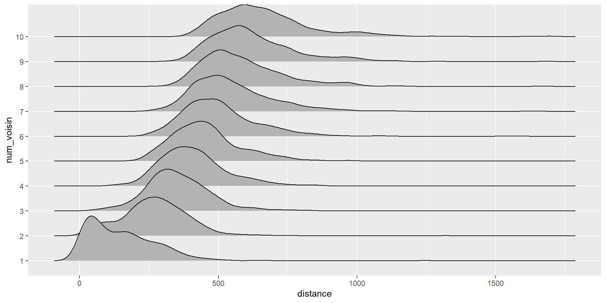
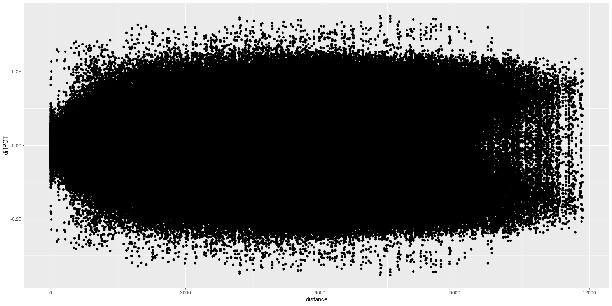
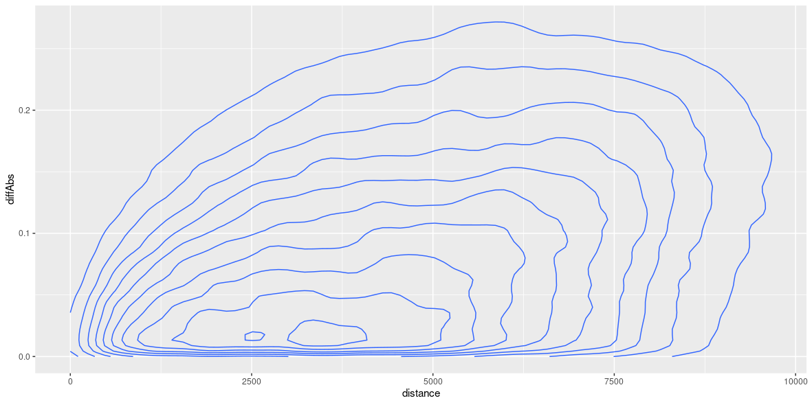
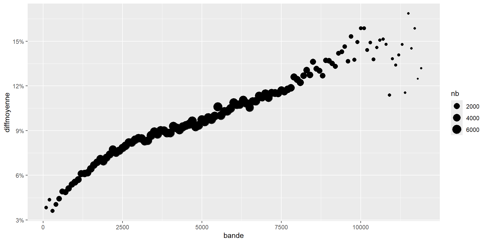

suppressPackageStartupMessages({
library(tidyverse)
library(readxl)
library(sf)
library(potential)
library(patchwork)
library(glue)
})M2 Carthagéo - Du discret au continu - Séance 5
Séance 5 - Distances et variations spatiales - Approche naïve de l’auto-corrélation spatiale
Mesures de distances empiriques
Chargement des packages
Import des données
communes_paris <- st_read("../DATA/Maillages_Limitrophes_Paris.gpkg", layer = "Communes", as_tibble = TRUE) %>%
st_transform(2154) %>%
filter(INSEE_DEP == "75") %>% filter(INSEE_COM != "75056")Reading layer `Communes' from data source
`D:\Dropbox\2_Enseignement\2025-2026\M2_AnaSpa\SITE\posts\RC\DATA\Maillages_Limitrophes_Paris.gpkg'
using driver `GPKG'
Simple feature collection with 50 features and 12 fields
Geometry type: MULTIPOLYGON
Dimension: XY
Bounding box: xmin: 639863 ymin: 6855647 xmax: 663292 ymax: 6872673
Projected CRS: RGF93 Lambert 93contour_paris <- communes_paris %>% summarise() %>% st_buffer(300)bureauxVote <- st_read("../DATA/BureauxVote_Paris_L93.gpkg", as_tibble = TRUE) %>%
st_transform(2154)Reading layer `BureauxVote_Paris_L93' from data source
`D:\Dropbox\2_Enseignement\2025-2026\M2_AnaSpa\SITE\posts\RC\DATA\BureauxVote_Paris_L93.gpkg'
using driver `GPKG'
Simple feature collection with 899 features and 5 fields
Geometry type: POINT
Dimension: XY
Bounding box: xmin: 645317.8 ymin: 6857789 xmax: 656919 ymax: 6866868
Projected CRS: RGF93 v1 / Lambert-93resultatsVote <- read_xlsx("../DATA/BureauxVote_Paris_Resultats_Presi2022_T1.xlsx") %>%
select(-c(1:6))
resultats_bureaux <- bureauxVote %>%
left_join(resultatsVote, by = c("CodeBVote" = "Code du b.vote")) %>%
mutate(Inscrits = as.numeric(Inscrits))1 - Distance au plus proche voisin
Le package nngeo permet de calculer de nombreux types de distances entre des objets sf.
library(nngeo)
library(listviewer)
liste_distance <- st_nn(x = resultats_bureaux, y = resultats_bureaux,
k = 1, returnDist = TRUE)
listviewer::jsonedit(liste_distance)
Tip
En paramétrant k, on choisit le nombre de plus proches voisins dont calculer la distance.
Ici, en choisissant une valeur de k = 1, la fonction calcule la distance entre chaque point et son plus proche voisin, ie. lui-même (voir les distances qui sont toutes à 0).
Pour calculer la distance au plus proche voisin réel, il faut donc indiquer k = 2 et ne conserver que le second voisin.
library(nngeo)
library(listviewer)
liste_distance_2 <- st_nn(x = resultats_bureaux, y = resultats_bureaux,
k = 2, returnDist = TRUE)
distance_ppv <- liste_distance_2$dist %>% map_dbl(2)
summary(distance_ppv) Min. 1st Qu. Median Mean 3rd Qu. Max.
0.00 0.00 0.00 55.85 66.05 1245.94
WarningQuel est le problème ici ?
TipLes bureaux de vote sont souvent regroupés dans des lieux municipaux communs.
- Il est donc nécessaire de dé-doublonner les points pour en mesurer les distances réelles.
Solution rapide : suppression pure des doublons géométriques
bureaux_distincts <- resultats_bureaux %>% select() %>% distinct()
distance_bureaux <- st_nn(x = bureaux_distincts, y = bureaux_distincts,
k = 2, returnDist = TRUE) %>%
pluck("dist") %>%
map_dbl(2)
summary(distance_bureaux) Min. 1st Qu. Median Mean 3rd Qu. Max.
0.0005 47.7112 125.9838 151.4778 229.5483 1245.9397
TipLes bureaux de vote sont souvent regroupés dans des lieux municipaux communs.
- Il est donc nécessaire de dé-doublonner les points pour en mesurer les distances réelles.
Solution plus juste : agrégation des votes des doublons
bureaux_distincts <- resultats_bureaux %>% group_by(geom) %>%
summarise(
across(where(is.character), ~first(.x)),
across(where(is.numeric), ~sum(.x)),
.groups = "drop"
)
distance_bureaux <- st_nn(x = bureaux_distincts, y = bureaux_distincts,
k = 2, returnDist = TRUE) %>%
pluck("dist") %>%
map_dbl(2)
summary(distance_bureaux) Min. 1st Qu. Median Mean 3rd Qu. Max.
0.0005 47.7112 125.9838 151.4778 229.5483 1245.9397 Exercice : Tracer l’histogramme et la courbe de densité des distances au plus proche voisin des bureaux de vote
distance_bureaux_tbl <- distance_bureaux %>%
as_tibble() %>%
rename(distance = value)
p1 <- ggplot(distance_bureaux_tbl) +
aes(distance) +
geom_histogram(fill = "#67c9ff", colour = "white")
p2 <- p1 +
geom_density()
p3 <- ggplot(distance_bureaux_tbl) +
aes(distance) +
geom_histogram(aes(y = after_stat(density)),
fill = "#67c9ff",
colour = "white") +
geom_density(aes(y = after_stat(density)))
p3
Où couper ?
- Tracer la courbe des fréquences cumulées en fonction de la distance au plus proche voisin
frequence_cumulee <- distance_bureaux_tbl %>%
arrange(distance) %>%
mutate(dummy = 1/nrow(distance_bureaux_tbl)) %>%
mutate(cumfreq = cumsum(dummy))ggplot(frequence_cumulee) +
aes(distance, cumfreq) +
geom_line() +
scale_y_continuous(labels = scales::percent)
Pourquoi s’arrêter au premier plus proche voisin ?
2 - Distances aux n plus proche voisins
distance_bureaux_10 <- st_nn(x = bureaux_distincts, y = bureaux_distincts,
k = 11, returnDist = TRUE) %>%
pluck("dist") %>%
enframe() %>%
rename(ID = name) %>%
unnest(value) %>%
rename(distance = value) %>%
group_by(ID) %>%
mutate(num_voisin = row_number() - 1) %>%
ungroup() %>%
filter(num_voisin > 0) %>%
mutate(num_voisin = as.factor(num_voisin))Exercice : Représentation des distances aux 10 plus proches voisins
ggplot(distance_bureaux_10) +
geom_histogram(aes(x = distance))
ggplot(distance_bureaux_10) +
geom_histogram(aes(x = distance)) +
facet_wrap(~num_voisin, ncol = 1) 
library(ggridges)
ggplot(distance_bureaux_10) +
geom_density_ridges(aes(x = distance, y = num_voisin))
library(ggridges)
ggplot(distance_bureaux_10) +
geom_density_ridges(aes(x = distance, y = num_voisin), stat = "binline", scale = 0.9)
3 - Distances moyennes
NoteTant qu’à faire, autant analyser l’ensemble des distances entre tous les bureaux de vote
Exercice : Mesure de distances
- A l’aide de la fonction
st_distancedu packagesf, calculez la matrice de distance entre tous les bureaux de vote de Paris et affichez-en l’histogramme
matrice_distance <- st_distance(x = resultats_bureaux, y = resultats_bureaux,
by_element = FALSE)
liste_distances_BV <- matrice_distance %>%
as.matrix() %>%
as_tibble() %>%
mutate(ID_Origine = as.character(row_number()), .before = 1) %>%
pivot_longer(-ID_Origine) %>%
mutate(ID_Destination = str_remove(name, pattern = "V")) %>%
mutate(distance = as.numeric(value)) %>%
select(-value, -name) %>%
filter(ID_Origine != ID_Destination)
glimpse(liste_distances_BV)Rows: 807,302
Columns: 3
$ ID_Origine <chr> "1", "1", "1", "1", "1", "1", "1", "1", "1", "1", "1", …
$ ID_Destination <chr> "2", "3", "4", "5", "6", "7", "8", "9", "10", "11", "12…
$ distance <dbl> 973.0925, 2827.1982, 2807.4550, 2804.2950, 3033.7936, 3…ggplot(liste_distances_BV) +
geom_histogram(aes(distance, after_stat(density)))
4 - Distances et différences
- Dit autrement, on peut chercher à voir si les comportements électoraux présentent une autocorrélation spatiale
En dépit de ce que nous avons fait lors des précédentes séances, il n’y a strictement aucune logique à réaliser une interpolation de variables qui ne sont pas corrélées spatialement.
Autocorrélation spatiale naïve
On peut chercher à voir s’il y a un lien entre la variation d’une variable électorale et la distance entre les bureaux de vote.
Prenons l’exemple des votes pour Emmanuel Macron lors du 1er tour des présidentielles 2022 à Paris
votes_macron <- resultats_bureaux %>%
st_drop_geometry() %>%
mutate(pctMACRON = MACRON / Inscrits) %>%
select(pctMACRON) %>%
mutate(ID_bureau = as.character(row_number()))
couples_bureaux <- liste_distances_BV %>%
left_join(votes_macron, by = c("ID_Origine" = "ID_bureau")) %>%
rename(pctMACRON_Origine = pctMACRON) %>%
left_join(votes_macron, by = c("ID_Destination" = "ID_bureau")) %>%
rename(pctMACRON_Destination = pctMACRON)
glimpse(couples_bureaux)Rows: 807,302
Columns: 5
$ ID_Origine <chr> "1", "1", "1", "1", "1", "1", "1", "1", "1", "1"…
$ ID_Destination <chr> "2", "3", "4", "5", "6", "7", "8", "9", "10", "1…
$ distance <dbl> 973.0925, 2827.1982, 2807.4550, 2804.2950, 3033.…
$ pctMACRON_Origine <dbl> 0.3164806, 0.3164806, 0.3164806, 0.3164806, 0.31…
$ pctMACRON_Destination <dbl> 0.3083141, 0.4026051, 0.3781447, 0.3616541, 0.36…Exercice - Comment analyser la différence ? 1/3
- Proposer une métrique permettant de mesurer l’écart de votes, et représentez-la en fonction de la distance.
difference_votes <- couples_bureaux %>%
mutate(diffPCT = pctMACRON_Origine - pctMACRON_Destination)ggplot(difference_votes) +
geom_point(aes(x = distance, y = diffPCT))
Exercice - Comment analyser la différence ? 2/3
La représentation des différences directes est rapidement illisibile en raison de la symétrie des données.
Filtrer le jeu de données précédent pour n’afficher les différences qu’une fois, et uniquement de manière positive
difference_votes_assym <- difference_votes %>%
filter(ID_Origine > ID_Destination) %>%
mutate(diffAbs = abs(diffPCT))ggplot(difference_votes_assym) +
geom_point(aes(x = distance, y = diffAbs))
ggplot(difference_votes_assym) +
geom_density_2d(aes(x = distance, y = diffAbs))
Exercice - Comment analyser la différence ? 3/3
Le lien entre distance et variation du taux de vote Macron n’est toujours pas évident à lire.
Proposer une méthode permettant de synthétiser la tendance
5 - Vers le semi-variogramme
On discrétise la distance par bornes de 100m
distances_differences_discretes <- difference_votes_assym %>%
mutate(bande = cut(distance, breaks = c(0:120) * 100, labels = FALSE)) %>%
mutate(bande = bande * 100)
meanDiff <- distances_differences_discretes %>%
group_by(bande) %>%
summarise(diffmoyenne = mean(diffAbs), nb = n())ggplot(meanDiff) +
aes(x = bande, y = diffmoyenne, size = nb) +
geom_point() +
scale_y_continuous(labels = scales::percent)
Les semivariogrammes
NoteCette manière de représenter l’autocorrélation spatiale entre des entités est à la base d’un outil de géostatistique, le semivariogramme.
- Cela consiste à représenter la semi-variance en fonction de bandes de distances :
\(semivar(d_{ij}) = 0.5 \times \frac{\sum_{i..j}{(valeur_{i} - valeur_j)^2}{}}{n}\)
semivarDiff <- distances_differences_discretes %>%
group_by(bande) %>%
summarise(semivar = 0.5 * mean(diffAbs^2), nb = n())ggplot(semivarDiff) +
aes(x = bande, y = semivar, size = nb) +
geom_point() +
scale_y_continuous()
Comment choisir des seuils de distance pour les interpolations ?
On utilise deux grandes méthodes de choix :